36 guides covering every screen in the app, in the order you will need
them. Start at the top if it is your first day, or jump to whatever you are
stuck on.
Everything runs in Docker, so Node is not needed on your machine. Five minutes
from nothing to a budget you can click around.
Make a config file.cp .env.example .env.
The defaults are fine for a first look.
Seed a demo household.docker compose --profile seed up seed — two members, four accounts
and a month of realistic behaviour including an overspend, so the screens have
something true in them.
Start it.docker compose --profile dev up,
then open localhost:8080.
The purple banner means the development login bypass is on.
It exists only in the development image, and the app refuses to start if it finds
it anywhere production-shaped — a public hostname, real Google credentials, or
NODE_ENV=production. You will never see it on a real deployment.
Going live
You need a domain, a Google OAuth client for sign-in, and somewhere to run one
container. Set BASE_URL to your exact public origin — sign-in
redirects and cookie scoping both depend on it being right — then
docker compose up -d. Start from an empty budget rather than the seed.
The first person to sign in becomes a member. Everyone else has to be invited
from Settings, and the allow-list is checked on every request rather than only at
sign-in.
Add your accounts
Accounts come in three kinds, and picking the right one matters more than
anything else you will do on this screen.
Budget accounts — current, savings, cash. Money here funds
envelopes. The total across them is what you are allowed to budget.
Credit accounts — credit cards. Spending creates a debt
and reserves the cash to clear it. See the cards guide.
Tracking accounts — a PPF, an EPF, anything you want on the
net-worth figure but never want to budget from.
Give each one its balance as of today. That balance becomes an opening
transaction, so the arithmetic starts from a real number rather than zero.
Closing, not deleting
Accounts are closed rather than deleted, always. The history attached to them is
real and other figures depend on it. A closed account disappears from the places you
pick accounts and stays in the places you read history.
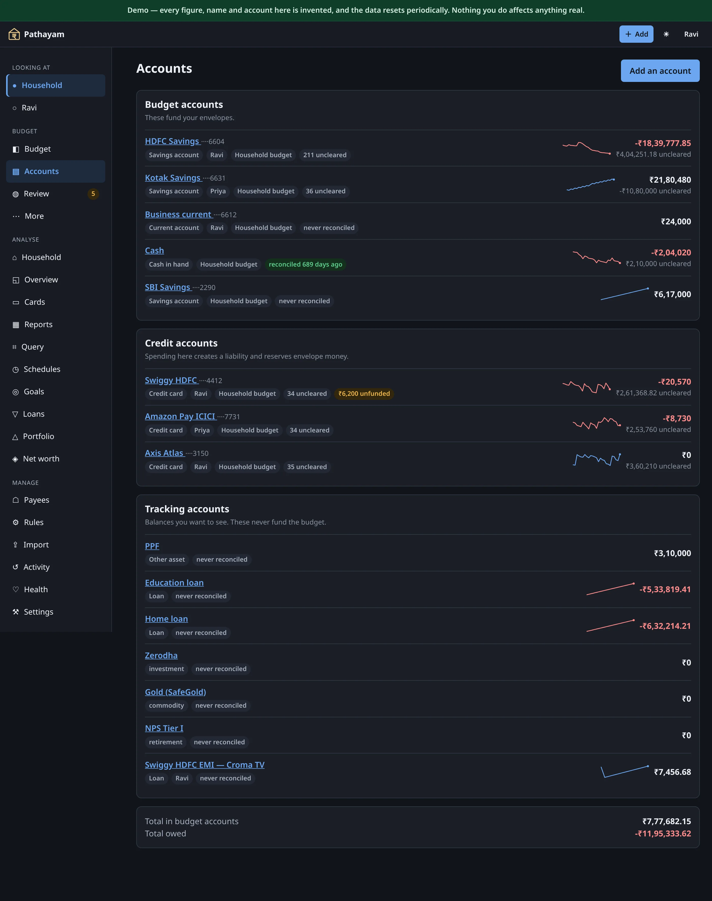
Accounts, grouped into budget, credit and tracking.
Set up categories
Categories are the envelopes. Groups hold categories. Start with fewer than you
think — five or six — and add more when reality demands it rather than in advance.
A useful starting set: Rent, Groceries, Eating out,
Transport, Bills, and one honest category called something like
Stuff I forget.
Order is information
The arrows beside each category and group move them. This is not decoration:
fund every target spends your money down the budget in exactly this
order, so whatever sits at the top gets funded first and any shortfall lands at the
bottom where you will notice it. Put the things that must happen above the things
that would be nice.
Envelopes the app manages
Some categories are created and retired by the app itself — one per credit card
for payments, and one per savings goal. They carry no manual controls and are marked
managed by the app, so it is obvious why you cannot rename them.
Hiding and deleting
Hide a category you have stopped using and its history stays intact. Delete one
only if it never had anything in it.

Categories with their targets and funding chips.
The monthly loop
Build your first budget
The rule is the whole method: you can only budget money you already
have. Not money you expect, not next week's salary. What is in your budget
accounts right now.
That number appears at the top as Ready to Assign. Your job is
to get it to zero — not by spending, but by giving every rupee a job.
Fund what will definitely happen. Rent, the loan
instalment, the electricity bill.
Fund what will probably happen. Groceries, transport,
the things you spend on weekly.
Fund what you would like to happen. Savings, the trip,
the emergency fund. Whatever is left goes here.
Ready to Assign going negative means you have
promised money you do not have. The app will keep saying so until you take some back
from somewhere. That nagging is the feature.
Reading the grid
Three columns per category. Assigned is what you gave it this
month. Activity is what happened — spending is negative.
Available is what is left, and it is the only number that matters
when you are standing in a shop.
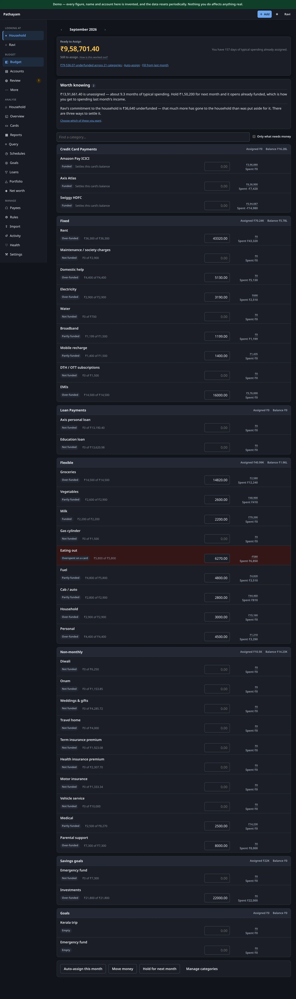
The month grid: assigned, activity and available.
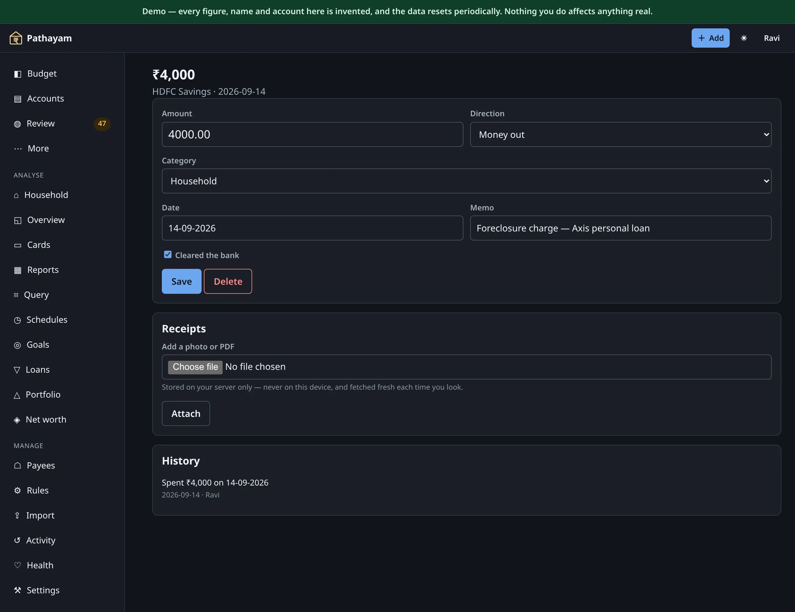
Converting a charge to EMI, from the transaction itself.
Assign, move and hold
Three different actions, and confusing them is the most common early mistake.
Assign
Moves money from Ready to Assign into a category. This is how the month gets
budgeted. Ready to Assign falls.
Move
Moves money between two categories. Ready to Assign does not
change — the total assigned is the same, it is just sitting somewhere else.
This is how you cover an overspend, and it is not cheating. Eating out came out of
the holiday fund, and now you know that.
Hold
Takes money out of this month's Ready to Assign and places it at the top of next
month's. This is how you get a month ahead. See its own guide.
Copy last month repeats the previous month's assignments in
one step, which makes a routine month about thirty seconds of work.
The month grid: assigned, activity and available.
Targets and auto-assign
A target says what a category needs, so the app can tell you whether it
has it. Rent needs ₹45,000 a month. An annual insurance premium needs ₹8,000 set
aside each month so that in March it is simply there.
Each category shows its progress against the target as a chip — funded, partly
funded, or not funded — so a glance down the grid tells you where the month stands.
Fund every target
Once targets are set, one tap does the monthly sit-down. You get a preview of
exactly what would be assigned before anything commits. Money is spent down the
budget in your order, so a thin month funds the top of the list and leaves the
shortfall visible at the bottom.
This does not run automatically at rollover, and
that is deliberate. The monthly sit-down is where you notice that groceries have
crept up ₹2,000. An app that quietly did it for you is an app you stop reading.
Categories with their targets and funding chips.
Record what you spend
Add is in the header on every screen, and a opens it
from anywhere. On a household with more than one person the form also asks
who spent it, which follows the account — a card in somebody's name is
attributed to them — and that name appears as a column in the register and in
Query.
Add sits in the middle of the navigation on purpose. Recording a
transaction should take about five seconds.
Amounts do arithmetic. Type 450+120 and it works
it out — useful when you are splitting a bill at the table.
Money out must name a category. “I will sort it
later” is how you end up with a queue of hundreds. Money in is exempt,
because its job is to sit in Ready to Assign until you give it one.
Splits handle one receipt covering several envelopes — the
supermarket run that was half groceries and half a birthday present.
Transfers between your own accounts are never spending and
are never counted as such.
Owner records who spent it, which matters on a shared budget
and on add-on cards.
Cleared means the bank has confirmed it. Leave it unticked
until you have actually seen it on their record.
Receipts
Attach a photo or a PDF to any transaction. It is stored in the database rather
than on a disk somewhere, and served so that no device caches a copy.
When you go over
You will go over. The question a budgeting app has to answer honestly is what
happens next, and there are two defensible answers. Choose one in Settings.
Reduce next month (the default) — the overage comes off next
month's Ready to Assign and the category starts fresh at zero. Last month is
closed and paid for.
Carry the negative — the category itself starts next month in
the red and has to be dug out. Harsher, and some people want exactly that.
Whichever you pick, today's move is the same: cover it. Move
money from another envelope. The app ranks suggestions by where there is most slack,
so it takes one tap.
Switching models re-derives your entire history under the new
one, as a single undoable step. Figures will change, which is correct — they were
always the answer to a different question.
Converting a purchase to EMI
When the bank offers to split a big charge into instalments, open the
transaction and say yes there. The converted amount comes off the card's balance
and becomes a loan with its own schedule and its own envelope — so you are not
asked to clear it on the card and pay it monthly, which is the mistake
worth avoiding. The processing fee and its GST are charged to the card like any
purchase, so they need an envelope, and the loan screen shows what the plan
actually costs in interest and fees.
Two details make the plans livable. Name it — the conversion form
offers the payee as a suffix, so you get “HDFC EMI — Croma TV” rather than a
column of identically-titled plans you have to open one by one. And whatever the card's
payment envelope was already holding against that charge moves across to
the new plan's envelope, because the money you set aside to clear the purchase is the
money that now pays its instalments. Nothing is stranded and nothing is asked for
twice.
On a household commitment it means something else
The envelope you use to commit money to the household can go red too, and it is
not an overspend: it means more of the household's spending was paid out of your
money than you put aside for it. The button says Put it down to me
rather than Cover, because covering it forgives nobody anything — it
decides your share this month was larger. Squaring up a
month covers the other two ways it can end.
Overspending on a card is different
Cash overspending means you spent money you had not budgeted. Card overspending
means you created a debt with nothing set aside to clear it, which is why the card
shows an unfunded amount until you deal with it.
The month grid: assigned, activity and available.
Close the month
Ten minutes, once a month. Nothing is locked and a closed month can be reopened,
so this is a ritual rather than a gate.
It shows you four things:
What the month did — earned, spent, saved, the savings rate,
and the biggest categories.
How your net worth moved, split into money saved, market
movement, currency movement and debt repaid. Four different reasons a number
changed, separated.
A dated snapshot, so the history is something recorded rather
than recalculated later from whatever the prices are now.
Whether next month is funded.
The app will remind you once the month is over
and nobody has closed it, then stop mentioning it if you mute that kind of
reminder.
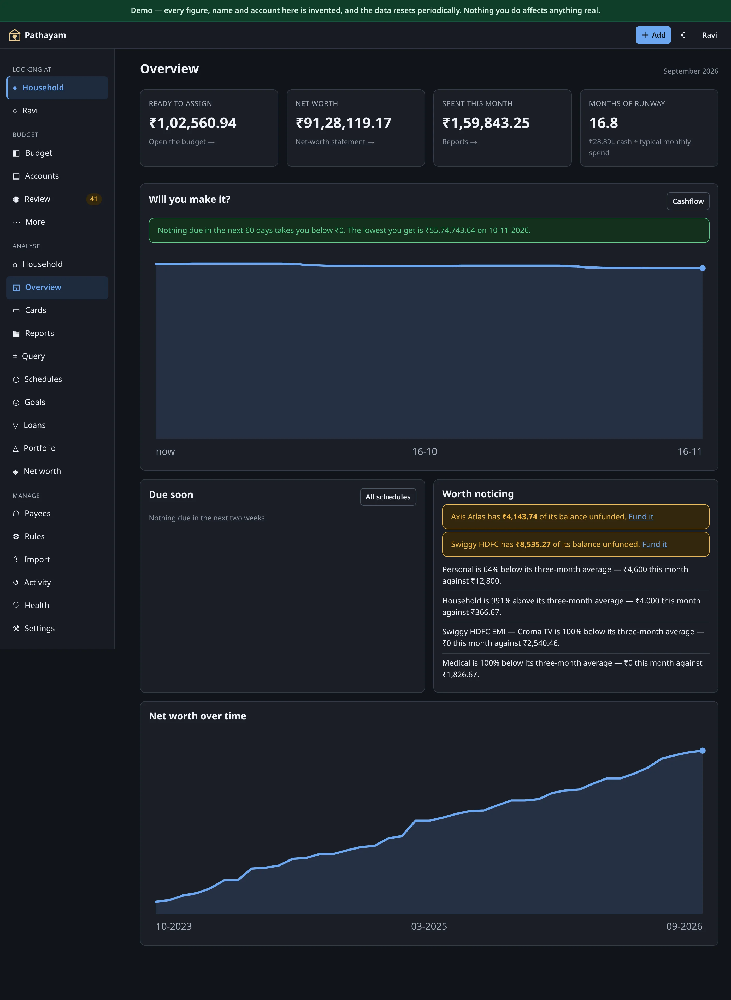
Overview — runway, what is due, the month so far.
Keeping money separate
Should you keep it separate?
Most households pool everything. If that is you, skip this part entirely — there
is nothing to switch on, no second grid, and the app never mentions any of it.
This is for the other arrangement: we keep our own accounts and split the
shared bills. Couples who came to it late, one salary and one irregular income,
somebody supporting a parent out of their own money, or simply a preference. It is a
legitimate way to run a household and most budgeting apps cannot do it at all.
What you get is a budget of your own — your accounts, your envelopes, your Ready
to Assign — plus an agreed amount you put toward the shared bills each month. What
you give up is nothing: the household budget works exactly as it did.
The important part is that money never moves to commit it.
You do not transfer ₹40,000 to a joint account and then budget it twice. You assign
it, and it stays in your account until something shared is actually paid for.
What the other person can see
How much you committed, and how much of it has gone out. That is all. Not your
balances, not your accounts, not your other envelopes — not through any total, and
not by subtracting one number from another.
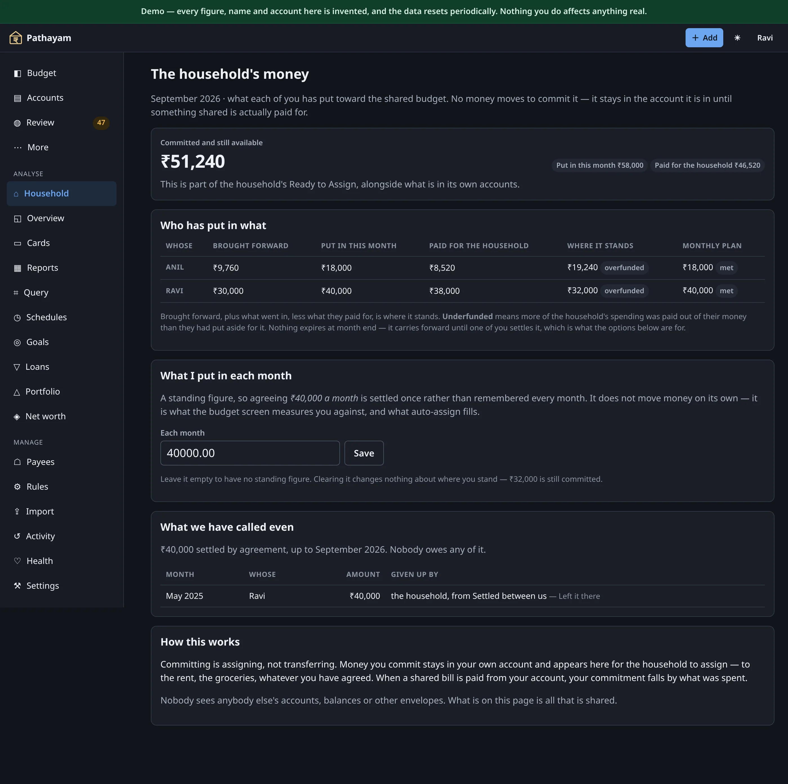
What each of you put in, and where it stands.
Open a budget of your own
On the budget screen, + My own budget. It appears immediately
with a few envelopes to start from and one more you did not create: the household
envelope, which is how you put money toward the shared bills.
Then move your accounts into it. Open an account, Edit, and set
Which budget this account funds to your own. That is the setting that
changes the figures: the balance leaves the household's Ready to Assign and joins
yours, and spending from the account lands in your envelopes.
Making an account private
Once an account is in your own budget you can set Who can see it to
private, and nobody else sees the account or its balance at all.
Private only works in your own budget, and the app refuses
it in the household's. The reason is arithmetic rather than policy: the household's
Ready to Assign is the sum of every account in it, so a hidden one there could be
worked out by subtracting the visible ones. Refusing is more honest than a promise
the sums cannot keep.
Switching between them
The sidebar gains a Looking at section. Every screen that shows
one budget's money — the grid, Overview, Cards, Schedules, Categories — follows it.
Reports and Query are different: they ask whose money as a filter, because
"what did we spend on groceries" and "what did I spend" are different questions.
Commit to the household
In your own budget there is an envelope called → Household.
Assign to it and that money is committed: it shows up in the household's Ready to
Assign for the two of you to assign to rent, groceries, whatever you have agreed.
No money moves. It is still in your account. That is the whole point, and it is
what lets a private account fund shared spending without publishing its balance.
Set it once
On The household's money, set a monthly plan — ₹40,000 a month,
say. It is an ordinary target, so the budget screen measures you against it and
auto-assign fills it. Agreeing the figure once beats remembering it every month.
Unspent commitments roll over like any other
envelope. Nothing expires at month end, and taking money back out is a deliberate
move rather than something the app does for you — the household was counting on
it.
Paying for shared things
Pay the rent from your own account and file it to the household's Rent envelope.
Two things happen at once, and no transfer is involved:
The household's Rent envelope falls, because the rent is paid.
Your → Household envelope falls by the same amount, because that is the
commitment being spent.
When you pick an envelope from another budget, the Add screen says so under the
picker. It is the ordinary way to pay for shared things, not an error.
Shared cards and add-on cards
A shared card is one whose account sits in the household
budget. Anybody may spend on it. The bill is paid from the card's own payment
envelope, in the household's budget, however the spending was filed — so a
shared card's payment is never split between you.
An add-on card — your card on somebody else's account — keeps
the debt with the primary holder, because that is who the bank chases. Filing an
add-on charge to your own envelope means you have used their credit, so the
balance between you moves by that much.
Filing your money to the other person's envelope, with nothing
shared between you, is refused. It would invent a balance neither of you
arranged.
One receipt, two budgets
Split it. Half to the household's Groceries, half to your own Personal. Each line
lands in its own budget and draws on the right money.
Squaring up a month
Some months one of you puts in more. The app does not call that a debt — you are
not a creditor and your partner is not in default on the electricity. It says the
commitment is underfunded: more has gone to the household than was
put aside for it.
On The household's money, the row reads left to right and adds
up: brought forward, plus what went in, less what went to the household, is where it
stands. There are three ways to settle it, and they are genuinely different.
Put it down to me. Fund it from your own Ready to Assign. Your
share this month was simply larger. Nothing is forgiven and nobody else is asked
for anything.
I'll pick it up. The other of you commits the amount on top of
what they already had, so it is funded from their budget instead.
Call it even. Nobody funds it. This is the only one that lets
something go.
Calling it even still costs something, and the app shows where.
It becomes spending on the side that gave it up — it needs an envelope, like
anything else — and that budget's Ready to Assign pays for it. It is the household
buying somebody a present, which is what happened. It never reduces what you pay the
bank: the card bill is owed either way.
Closing the month
Each budget closes on its own. The household's month can close while yours is
still open, and the other way round — one person's procrastination should not block
the other's ritual. The household's close reports what each of you put in and how
much went out.
When somebody leaves
Removing a member never deletes anything. Every transaction they entered keeps
their name, the history stays exactly as it was, and adding the same email address
back restores them — they pick up where they left off. Settings lists anybody
removed with an Add back button, so it is one click either way.
What is not automatic is the money. If they kept a budget of their own there is
usually a balance outstanding, and the app will not remove them until you say how
it ends. It offers the options and never picks one.
They have money set aside and unspent. It is theirs — they
promised it, and the promise ends with the arrangement. Giving it back is the
only ending offered, because recording a debt here would invent one.
The household has had the use of their money. Either record
it as money owed — which becomes ordinary family lending, with them as
the counterparty, because they are outside the household now and that is exactly
what family lending is for — or they call it even and let it go.
Whichever you pick, both sets of books still close. The
balance does not evaporate because somebody left, and it does not sit somewhere
with nobody attached to it.
Money coming in
Import statements and CSVs
Typing everything in by hand is how budgeting apps get abandoned. Three ways in,
and all three land in the same queue rather than posting themselves.
Statement PDFs
Drop the file on the Import screen. Eleven banks are recognised from their own
layouts — HDFC, ICICI, Axis, SBI, Union, Canara, YES, IndusInd, Kotak, RBL and HSBC —
plus broker contract notes.
Most Indian statements are password-protected, and each bank has its own rule.
The screen shows you that bank's hint. If you save your statement identity in
Settings, the app derives the password itself and you never type one.
Every parse is verified against the statement's own closing
balance. If the two disagree the app says so rather than quietly importing something
wrong. On a real 848-row statement it reconciles to the paisa.
CSV
Paste it in. Headers are detected, Indian number formats are understood, and once
you map a bank's columns the mapping is saved and offered next time.
Undoing an import
Any import can be reversed in one step from the import log, taking every row it
created with it. Worth knowing before your first attempt, because it makes
experimenting safe.
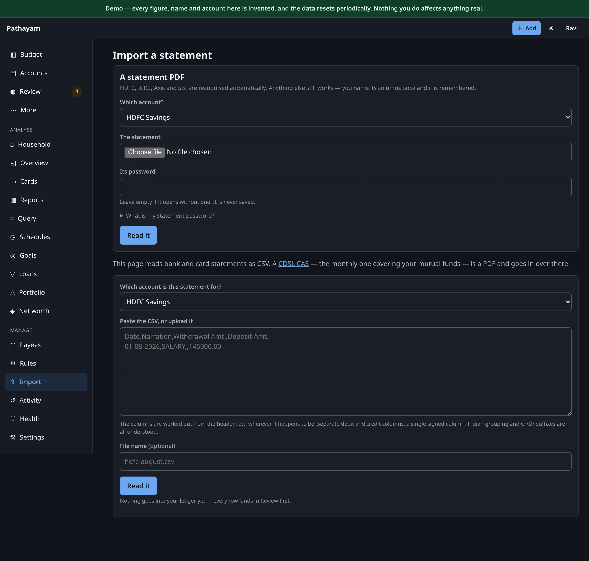
Import — paste a CSV or drop a statement PDF.
The review queue
Nothing posts itself. Everything imported waits here with its raw text beside it,
so you can always see exactly what the bank said rather than only what the app made
of it.
Uncategorised spending — file it. If you have filed that payee
before, the category is offered as a single tap rather than a dropdown to hunt
through.
Possible duplicates — the same purchase arriving twice, once
from an alert and once from the statement. Five separate tiers of matching decide
how confident the app is; you merge or keep both.
Overspent categories and unfunded cards — the two things most
worth acting on, so they are here rather than only on the budget screen.
Proposed rules — see the next guide.
Money you are owed — anything marked reimbursable stays listed
until it comes back.
Income never appears here. In an envelope budget, income's job is to
arrive in Ready to Assign and wait to be given one, which the app has already done
correctly — asking you to categorise it would be asking you to answer a question it
already answered.
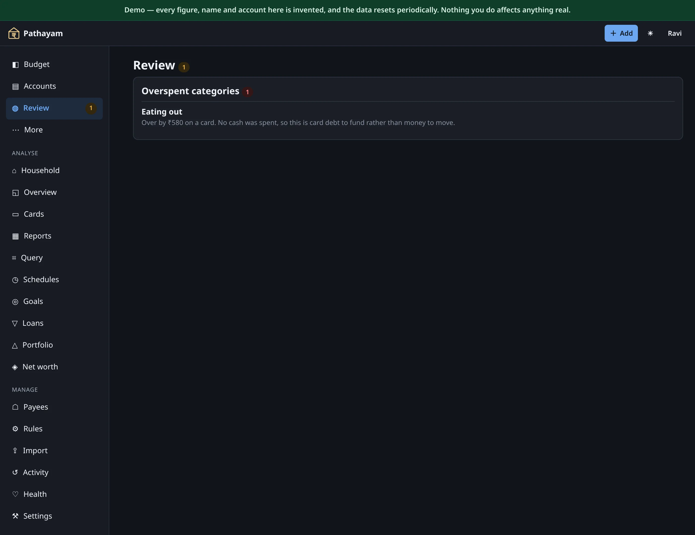
The review queue, with the raw imported text kept.
Rules and automatic filing
File the same payee twice and the app proposes a rule, stating exactly what it
inferred and from which transactions. It never applies one on its own.
Confirm a rule and you are offered the chance to apply it to your existing
history, with a preview of every transaction that would change before anything does.
Writing one yourself
Rules match on the payee, the narration, the amount, the account, or a combination,
and can set a category, rename the payee, add tags or flag for review. There is a
tester: paste in a narration and see what would fire.
Why it learns from filing rather than importing
Filing counts wherever it happens — from the review queue, from the transaction
screen, from anywhere. That matters more than it sounds: an app that only learned
from imports would watch you categorise the same delivery service a hundred and
thirty times and never once offer to help.
The review queue, with the raw imported text kept.
Bank alerts by email
Optional, read-only, and off until you turn it on. Once connected, a bank alert
becomes a queued row within seconds of arriving, which is as close to live as a
budget gets without a bank integration.
It reads only the banks' own sending addresses, never the rest
of your mail.
Access is read-only. Nothing is sent, labelled, or deleted.
You connect your own Google project, so the credentials and the consent are
yours rather than a third party's.
Disconnecting revokes the token and stops the fetching immediately.
Statement emails too
When a bank sends the monthly statement as an attachment, it is fetched,
decrypted using your saved identity, parsed and queued — the whole chain, without you
opening the mail.
Add-on card alerts arrive in the primary holder's inbox but
greet the cardholder by name. The parser carries that name through so the transaction
can be attributed to the right person rather than the account holder.
Set the statement day and the due day when you add the card, or
from Edit afterwards. They do different jobs: the due day projects the
payment onto the cashflow calendar, and the statement day tags every charge on the
register with the cycle it bills in — a cycle runs from the day after one statement
up to and including the next, so a charge on the 19th with a statement day of 18
bills the following month. Both clamp to the last day in a month too short to have
theirs.
This is where most budgeting apps get vague, so it is worth two minutes.
Spending on a card is still spending.
Buy groceries on a card and two things happen at once: the Groceries envelope goes
down by the amount, and the same amount moves into that card's payment
envelope. The cash to clear the bill is reserved the moment the charge lands, so
the statement is never a surprise.
The Cards screen
Every credit account in the order it falls due, with a summary strip across the
top: total owed, total not funded, and how many fall due within a week.
Look at what is unfunded. That is balance with no
envelope behind it — usually an overspend, or a charge nobody has filed yet.
Fund it from another envelope, using the same cover flow
as an overspend.
Record the payment as a transfer from a bank account to
the card. The payment envelope empties, the balance clears, and no category is
involved — the categories were charged when you spent.
Record a statement — amount, date, due date, minimum — and
the card starts showing real due dates instead of “whatever the bank says”.
Add-on cards
A second card on someone else's account shares one limit, one statement and one
payment. Add it as a card on that account rather than as an account of its
own, and every transaction still records which card it was and whose.
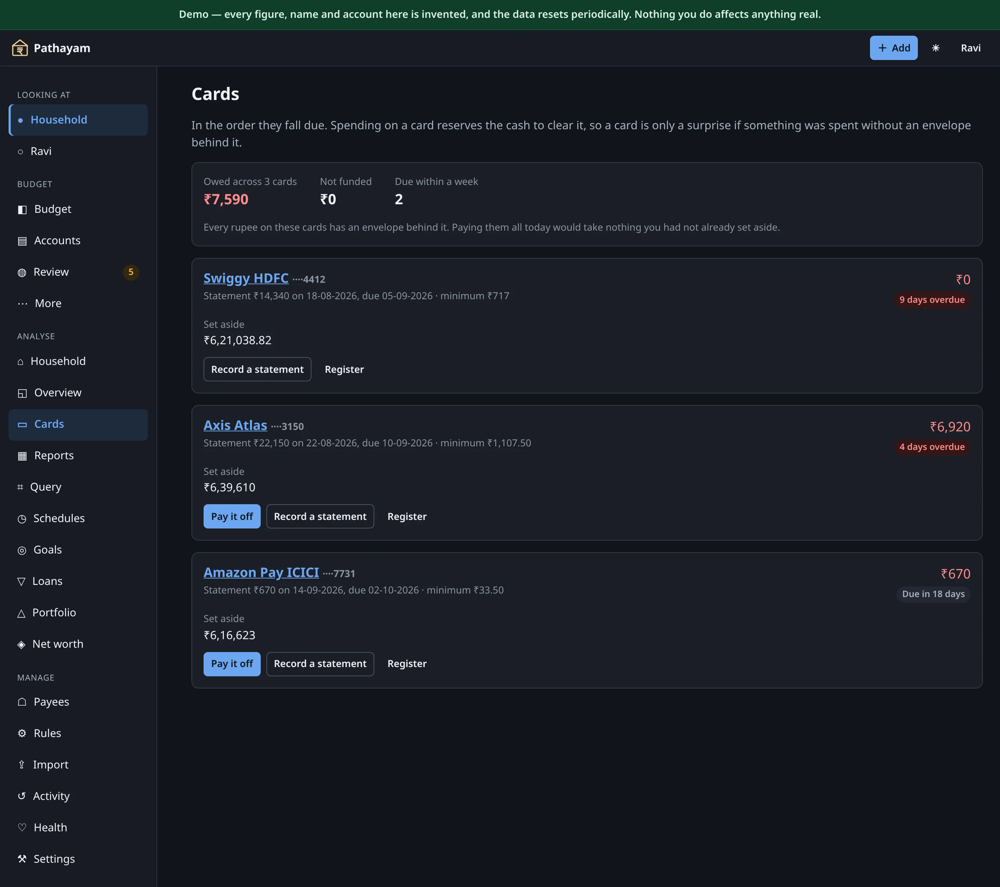
Cards, in the order they fall due.
Loans
Add a loan with its principal, rate and tenure. The one thing to get right is the
interest model.
A rate quoted “flat” is not what it sounds like.
Flat interest is charged on the original principal for the whole tenure, even as you
pay it down. The app shows the equivalent reducing rate beside it, which is usually
close to double the quoted number. Personal and gold loans are frequently quoted this
way.
Instalments
Record each instalment with the lender's own principal and interest split rather
than the app's projection. Where the two disagree, that is drift, and
it is surfaced rather than silently absorbed — the app projects, the lender reconciles,
and when they differ you want to know.
Pay it from the account the lender actually debits. A bank EMI leaves a bank
account. A card EMI is a charge on the card, not a transfer out of
savings — so recording one against a credit account posts a categorised charge the way
the statement will show it, and the card balance rises by the instalment before the
loan balance falls by the principal. Anything else would have the money leaving twice.
Its envelope funds itself
Every loan gets a payment envelope, and its monthly target is set to the EMI the
moment the loan exists — you do not have to remember to set one, and a rate change or a
fresh disbursement moves the target with it. The EMI is the least negotiable number in
your month; it should not be the one you forgot to budget for.
Settling early
When the loan is paid off, the page says so and offers to close it. You can also
settle before term: enter what you are paying and the foreclosure charge
the lender wants for the privilege, along with the account it comes out of and the
envelope it spends from. Most lenders charge to be repaid early — a percentage on a
personal loan, a flat fee on a card plan — and a prepayment decision taken without it
is taken against a saving larger than the one actually on offer.
Before you prepay
Use the calculator. It puts reduce the tenure against reduce the
EMI side by side and tells you what each saves. Reducing tenure almost always
saves more — on a worked ₹50 lakh example it is several lakh more — and the app shows
the figure rather than asking you to take that on faith.
Pick the column, and that is what happens. Choosing to reduce the
tenure holds your instalment where it is and shortens the loan; choosing to reduce the
EMI keeps the closure date and lowers the monthly bill. Say which envelope the lump sum
comes out of, too — a prepayment is the largest single thing most households will ever
pay, and it has to leave a named envelope like everything else rather than being
conjured.
When the rate resets
A repo-linked loan resets several times a year, and your lender has to offer you two
ways to take it: keep the instalment and let the tenure move, or
keep the tenure and let the instalment move. Enter the new rate, press
work out what it does, and the app prices both against your actual balance —
the new instalment, and how many months you would add or save. Then choose one, and it
is applied: the loan's envelope is re-targeted either way, so next month's budget asks
for the right figure without you rewriting it.
A rate rise you absorb in the tenure is not free. The instalment
stays comfortable and the loan runs longer, which costs more interest in total. Both
figures are on the screen before you pick, which is the point of the screen.
Whose loan it is
A loan belongs to a budget like everything else, and a personal one can be marked
private — then only its holder sees it, on the list, in Everything you
owe, and in net worth. A household loan is visible to everyone in the household, which
is the point of it being household. The owner is shown on the list, not just buried in
the detail page, so you can tell at a glance whose debt you are looking at.
Disbursements
A loan paid out in tranches records each one with its destination. A
builder-paid tranche raises the liability without ever touching your budget; a personal
loan landing in your savings arrives as money you can assign.
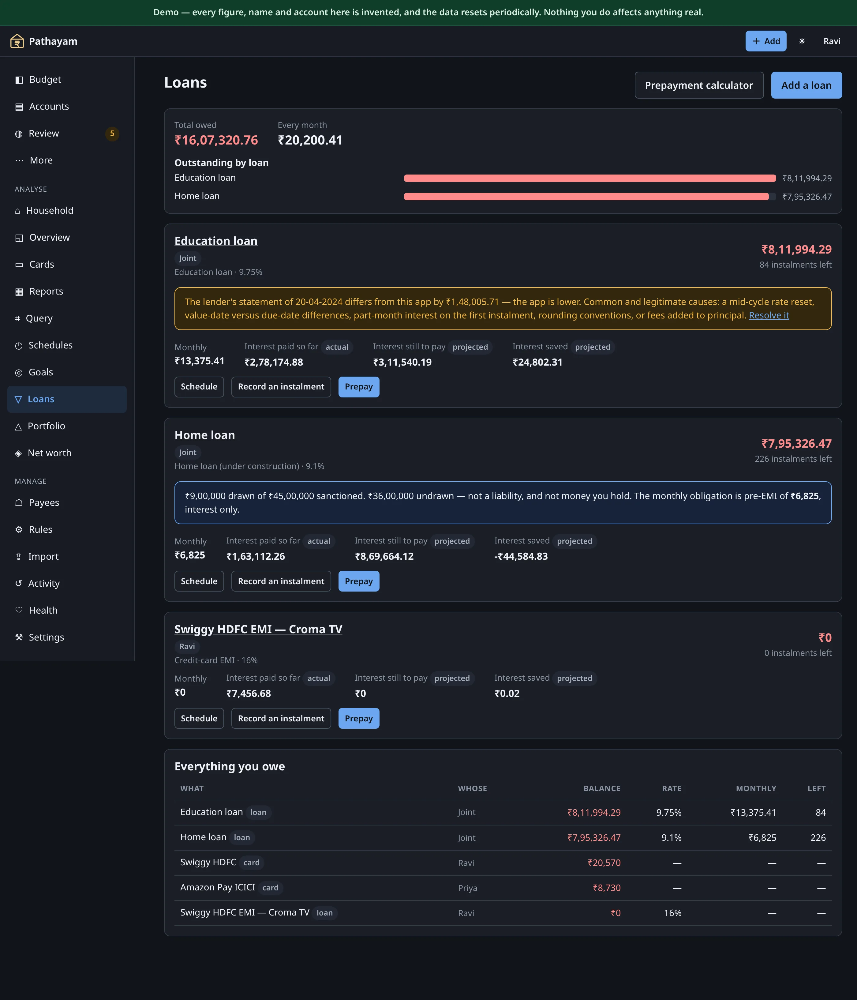
Loans — real cost, schedule and drift.
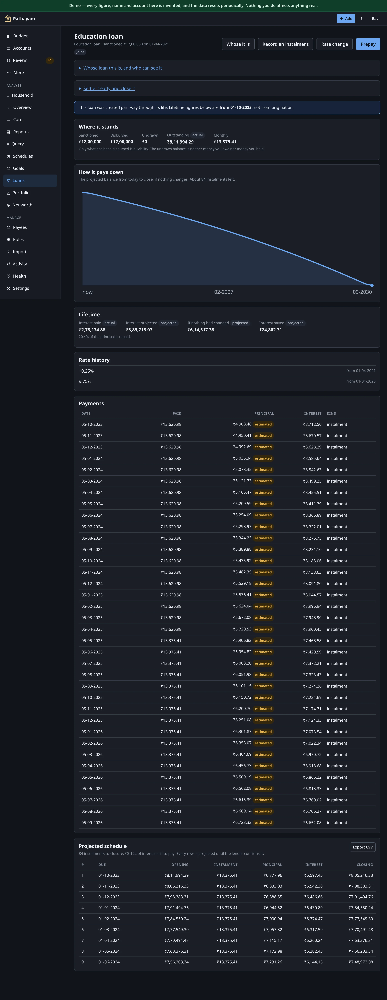
One loan — where it stands, and every instalment against the lender's own split.
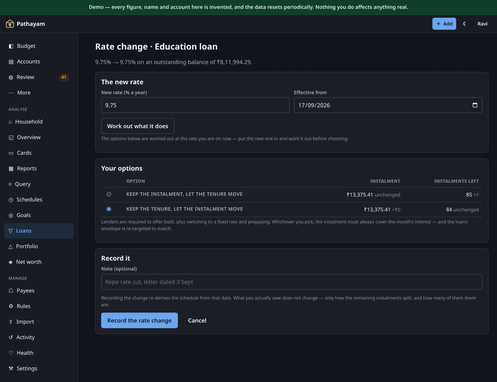
A rate reset: keep the instalment, or keep the tenure. Pick one and it is applied.
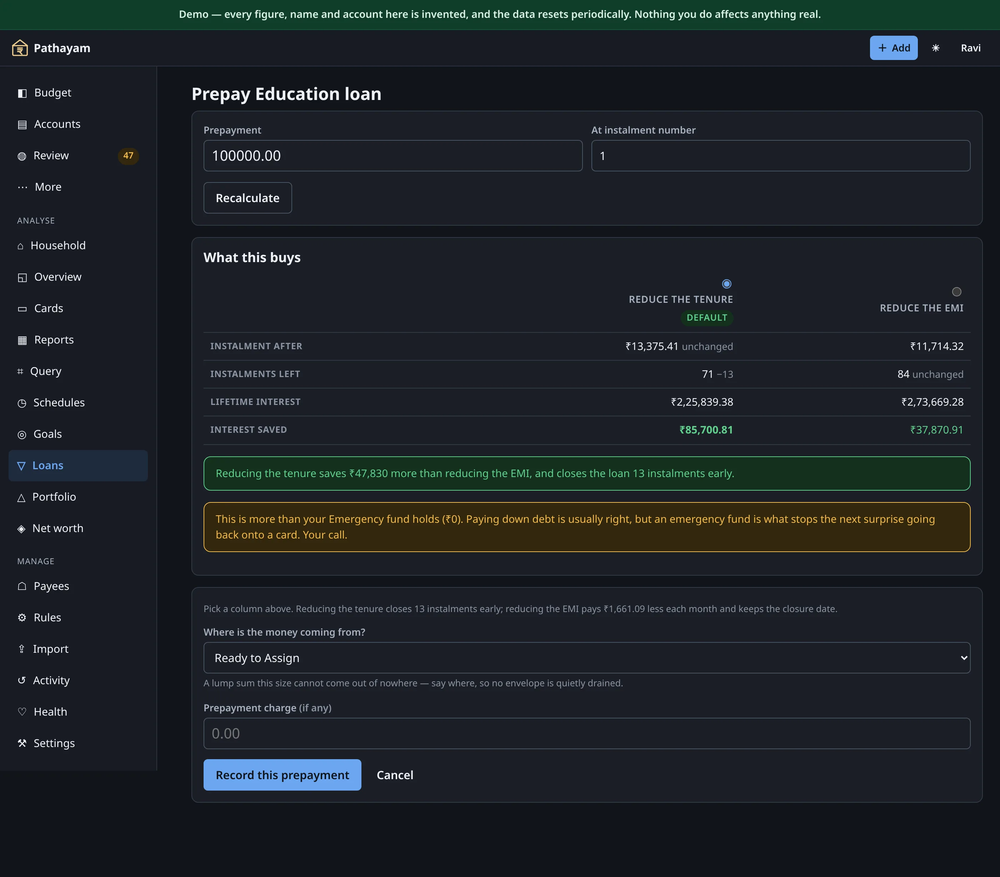
What a prepayment buys, before you commit a rupee.A loan's balance falling to zero over its schedule.
Lending to family
Money lent to or borrowed from a person rather than an institution, tracked
without pretending it is a bank loan.
Advances and repayments are recorded as they happen, and the
balance is derived rather than typed.
The other side is a name, not a member of your household —
which is almost always the case.
Write-off exists, because sometimes that is what happened, and
an app that cannot record it makes you lie to it.
Outstanding amounts appear in the review queue so they do not quietly become
gifts.
Making sense of it
Overview and runway
The screen to open when you want the month in one glance rather than in detail.
Runway — how many days of typical spending your money covers,
measured against what you actually spend rather than a guess.
Due soon — bills and card payments approaching, with whether
they are funded.
The month so far — in against out, and where it went.
Insights — a category well above its own three-month average,
a subscription about to renew, a spare month sitting unassigned.
Spending figures here include card spending. That sounds obvious
and is the single most common way a budgeting app misleads you: a headline that counts
only bank accounts can understate a card-heavy household by twenty times.
Overview — runway, what is due, the month so far.
Reports
Four reports, all rendered on the server as plain SVG. No charting library, and
nothing about your figures leaves the machine to be drawn.
Income against spending by month, with a net-saved line, so
you can see whether the gap is widening or you just had one good month.
Category trends over time — the report that catches groceries
drifting up ₹500 a month for a year.
Loan interest by financial year, April to March, which is the
figure you need at tax time.
Realised gains by financial year, split by how long each parcel
was held. It reports the holding period and names no tax category, because which
threshold applies depends on the asset and that year's rules — a judgement that
belongs to whoever files.

Reports — income against spending, by month.Grouped bars with a net-saved line.
Query and export
If anybody keeps a separate budget, Query and Reports both ask whose
money, defaulting to everything. "What did we spend on groceries", "what
did I spend" and "what did all of it come to" are three different questions, so the
app offers all three rather than picking one. A transaction that crosses budgets —
your money paying for something shared — counts under both, because which one
somebody means depends on what they asked.
One filterable, groupable table that every other screen drills into. Filter by
date, category, account, payee or tag; group by category, payee, month or account.
The totals cover every row that matched, not the
rows rendered on screen. The table shows a page and says how many matched, and the CSV
export carries the same uncapped figures. A total that silently described only the
visible page would be worse than no total at all.
Search
Search runs across both the cleaned payee name and the raw imported
narration. When you half-remember a transaction as “something with ZEPTO in
it”, the raw string is what finds it.
Getting everything out
The full export is one file in an open format containing every account,
transaction, assignment, lot, loan and event. Deliberately excluded, and asserted
absent by tests: your statement identity and any connected mail token.
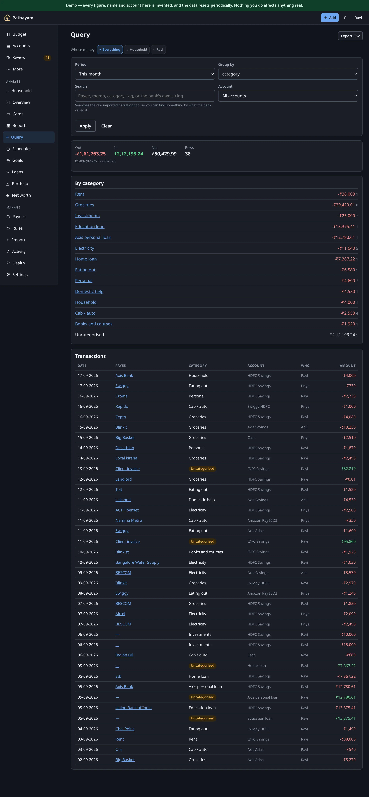
Query — filter, group, and export what matched.
Schedules and cashflow
Recurring things — rent, EMIs, subscriptions, a transfer on the 25th — recorded
once and then expected.
Detection. The app notices something arriving monthly and
offers to make it a schedule rather than waiting for you to think of it.
The calendar projects your balance forward, so the question
“will I make it to the 30th?” has an answer rather than a feeling.
Dips below your floor are flagged in advance, which is the
entire point of projecting at all.
Subscriptions are listed with annualised cost, because ₹149 a
month is ₹1,788 a year and the second number is the one that changes minds.
Money coming in is a schedule too. A salary on the 1st, rent from
a tenant, a quarterly dividend — put them in and the calendar stops asking you to
survive to the 30th on the balance you have today.
Every outgoing schedule names an envelope
You cannot save a payment that spends from nowhere. A schedule is a promise about
money leaving, and a promise with no envelope behind it is the thing zero-based
budgeting exists to prevent — so the app asks which envelope before it will take it.
Incoming schedules have no envelope, because money arriving is assigned when it
arrives, not before.
Arrived, paid, skipped
When a scheduled thing happens, mark it. Paid and
Arrived post the transaction for you — the right amount, the right
account, the right envelope — and roll the schedule to its next date.
Skip rolls it forward without posting anything, for the month the gym
was closed or the tenant paid late. The projection redraws immediately either way.
Changing one
Schedules can be edited and deleted. The rent went up, the subscription moved to
annual, the standing instruction was cancelled — open it, change it, and the calendar
reflects it the moment you save. Deleting a schedule leaves every transaction it
already posted alone; it only stops the app expecting more.
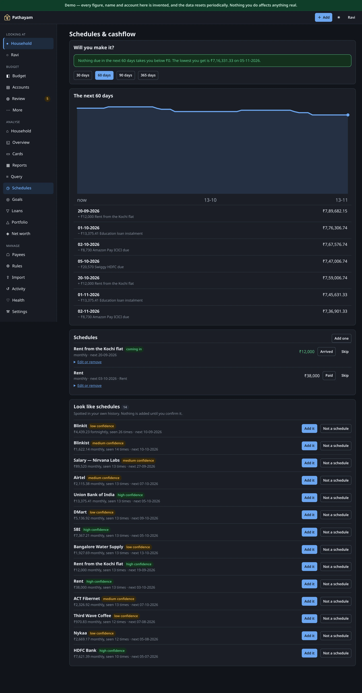
Schedules and the forward cashflow calendar.Sixty days of projected balance.
Savings goals
Each goal gets its own envelope, created and kept in step by the
app, so its progress measures money put aside for that goal and nothing else. If
anybody keeps a budget of their own, you also choose at creation whether the goal is
shared or yours — and that cannot be changed afterwards, because a
goal is measured by its envelope's balance and moving it between budgets would
change what the months you have been watching meant.
Long-horizon saving kept deliberately off the monthly grid, so a three-year goal
does not clutter the screen you look at every week.
Each goal has a target amount and optionally a date. The app works out what that
means per month, shows progress as a ring, and tells you whether you are on track or
what you would have to raise it to.
Each goal gets its own envelope, created and retired by the app.
Money in it is really assigned — a goal is not a wish, it is money you have already
set aside and can see.
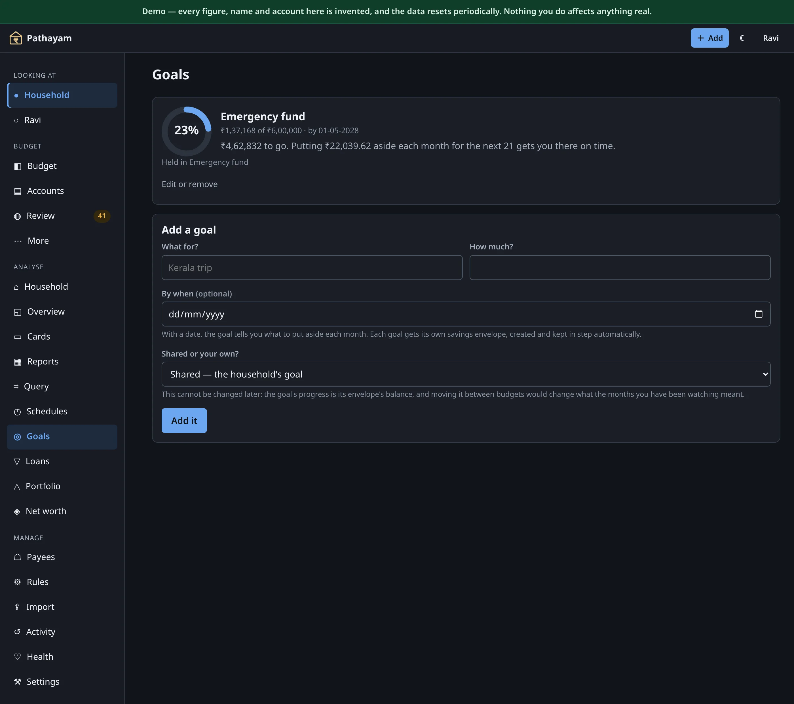
Goals, drawn as progress rings.
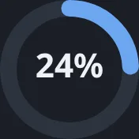
A goal against its target date.
Investments and net worth
Portfolio
Holdings are tracked as units with FIFO lots, never as a rupee
balance. That is what makes cost basis, the realised-versus-unrealised split and a
real return figure possible at all.
XIRR is the headline return, not a naive percentage — it
accounts for money going in at different times, which is how anyone actually
invests.
Every price carries its date, so a stale figure is visible as
stale rather than passing as current.
Selling shows a preview naming the exact lots it will consume
before you confirm.
Splits and bonus issues are recorded as events, so the unit
count changes without the history becoming wrong.
Getting holdings in
The monthly consolidated statement is the primary route: it already covers every
fund folio and demat holding, and rows reconcile against lots you already have rather
than duplicating them. Prices for funds and currencies refresh on their own.
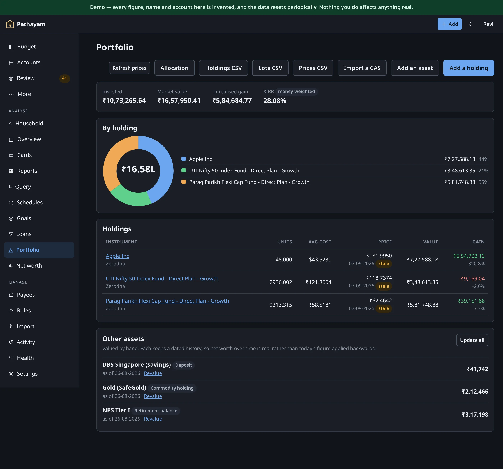
Holdings as units, with XIRR.
Hand-valued assets
Gold, a retirement account, property, anything that does not arrive in a
consolidated statement. These need you to say what they are worth, and the app makes
that one sitting rather than a hunt.
The valuations screen lists every hand-valued pot at once with what it was last
worth and when. Fill in the ones you know, leave the rest blank, save.
Something never valued still appears, marked no value
yet with a prompt to say what it is worth. An asset that vanished until you
valued it would disappear at exactly the moment it most needed the reminder.
Anything not valued recently is flagged, so a gold holding last priced eight months
ago cannot quietly hold up your net worth.
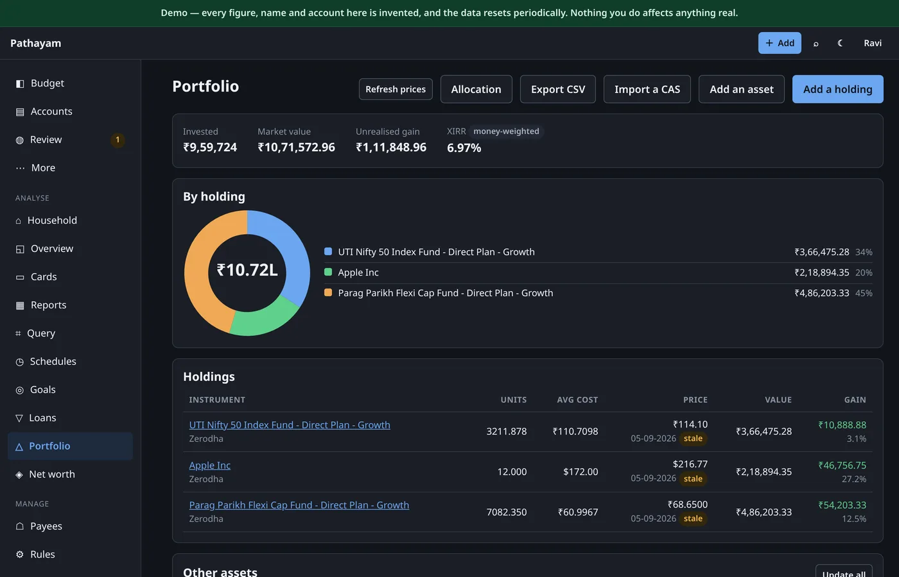
Every hand-valued pot, in one sitting.
Allocation
Where your money actually sits, by asset class, by geography and by currency —
three donut charts, drawn on the server.
Instruments are classified once and remembered. The point of the screen is the
gap between what you believe your allocation is and what it is, which is usually
larger than expected and always more equity than people think.
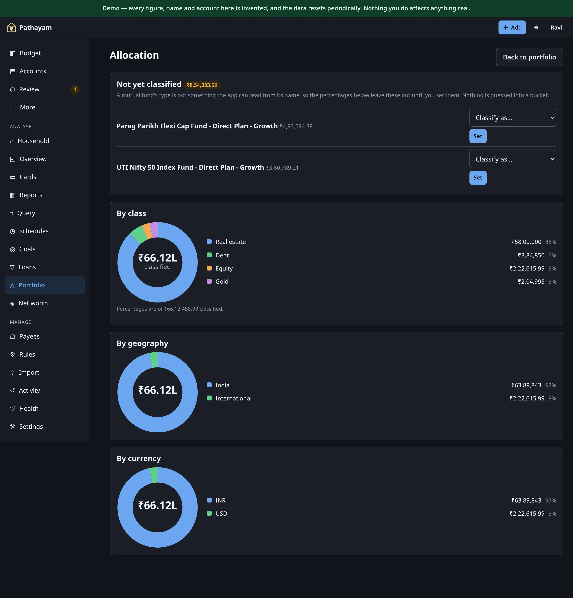
Allocation by class, region and currency.
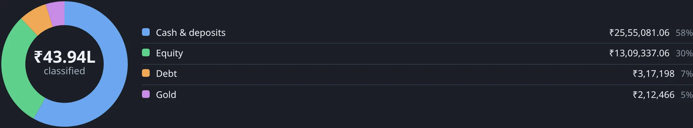
The three allocation donuts.
Net worth
The figure, with the date it is as of, and a history you can see the shape of.
The change over any period is split four ways, which is the part that makes it
useful rather than merely satisfying:
Money saved — what you actually put aside
Market movement — what prices did
Currency movement — what the rupee did, kept separate from the
asset's own gain
Debt repaid — the quiet one, and often the biggest
None of this appears on the budget screen, in any
form, by design. A good month in the market is not income and must never be
assignable. That rule is enforced by a test rather than by good intentions.
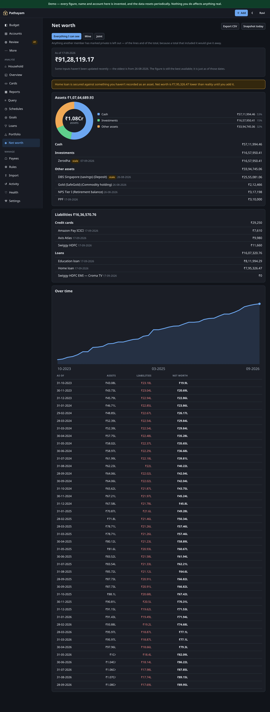
Net worth, decomposed four ways.
Running it
Activity and undo
Every change ever made, newest first, with the undo beside it. Thirty days.
The log is append-only and the undo is itself an entry — nothing
is edited away or deleted, so the record of what happened stays true even after you
reverse it.
Where a later change touched the same record, the undo tells you
what it would discard before it does anything.
Where the record is load-bearing — a loan instalment, a
portfolio lot, a reconciliation — it refuses outright and says what depends on it.
Imports undo as a batch, taking every row they created.
Explain this number
Ready to Assign and every category balance carry an explain link listing the
events that produced them, in order. When a figure is not what you expected, this is
the fastest route to why.

Activity — every change, with its undo.
Backups and health
Your data is one SQLite file. Back that up and you have backed up everything.
The scheduled job does more than copy. It restores
the latest backup into a scratch database and compares control totals against the
live one. A backup nobody has ever restored is a hope, not a backup — so the app
checks, and tells you when it last succeeded.
The Health screen
The one to open at 2am: backup status, last verified restore, price-feed health
and remaining quota, feature flags, error counts, and whether the development bypass
is present. Every check shows its state, when it last ran, and a plain-language
reason.
Restoring
Use the restore command rather than copying a file over the database by hand.
Copying leaves the database's write-ahead journal behind, and the first query then
reports the database as malformed — turning a recoverable afternoon into a lost
ledger at exactly the wrong moment. The command lists what is available, keeps what it
replaced, and reads the restored copy back before claiming success.
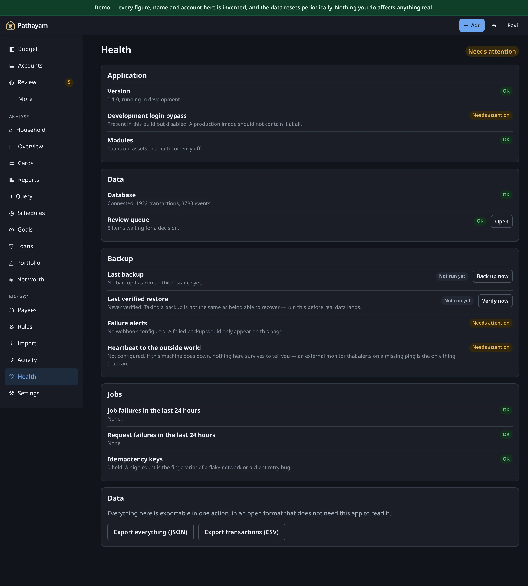
Health — backups, restore verification, feeds.
Settings, members and tokens
Everything that configures the household rather than the month.
Members — the allow-list. Invite by email address; they sign in
with that Google account. Removing someone keeps their historical attributions.
Overspend model — the choice described in the overspend guide.
Changing it re-derives your history.
Statement identity — name, PAN, date of birth, mobile, used to
derive statement passwords. Never exported, never logged, and asserted absent from
exports by tests.
Notifications — each kind of digest item can be muted
individually, per member.
Theme — light, dark, or follow the system, stored server-side
so the first paint is already correct.
Devices — every signed-in session, revocable one at a time.
API tokens — scoped read or read-write, shown once, and unable
to sign in or mint more tokens. See the API reference.
Feature flags — turn off loans, assets or multi-currency
entirely and they vanish from navigation and reports rather than sitting greyed
out.
Viewing as another member
Read-only by default, always logged, and shown as a banner on every screen while
it is active. Writes require an explicit toggle within the session.
A group is the heading envelopes sit under. On Categories you
can rename one in place, reorder it, and delete it once it is empty.
Deleting needs it empty, and that is deliberate. Deleting the
envelopes with it would destroy balances and history at one click; leaving them
behind would put money in envelopes no screen renders. Move them out first — it is
one change per envelope, and each is a decision worth making.
The ones the app keeps
Credit card payments, loan payments and Goals are marked managed by the
app. They hold envelopes the app creates and retires alongside the card, loan
or goal they belong to, so they carry no manual controls and cannot be deleted by
hand — they go when the last of those does.
A budget of your own starts with a few
Opening a personal budget gives you two groups and four envelopes to start from,
plus the household one. Rename or delete any of them; they are ordinary.
When something looks wrong
A number is not what I expected
Use the explain link beside it. It lists the events that produced the figure, in
order, which resolves nearly all of these in under a minute.
A past month reads lower than it did at the time
Known, and written down rather than hidden. Opening July in December subtracts
assignments made since. The budget is a live document rather than a series of monthly
photographs, and this is the price of that.
My card shows an unfunded amount I do not understand
Something was spent on the card without an envelope behind it. Usually a charge
still sitting unfiled in the review queue, or a genuine overspend. Filing it or
covering it clears the warning.
An import brought in the wrong things
Undo the batch from the import log; every row it created goes with it. Then check
the column mapping and try again.
The same purchase is in there twice
The review queue's duplicate tier should have caught it. If one was entered by
hand and the other imported, merge them from the queue — the merged row keeps the raw
imported text.
Prices are stale
Check Health for the feed's status and remaining quota. Free providers have daily
limits, and the app deliberately stops asking rather than burning through them.
I am locked out
Sign-in depends on BASE_URL exactly matching your public origin,
because the OAuth redirect and the cookie scope are both derived from it. A mismatch
after moving domains is the usual cause.
Easier to try than to read about
The demo runs the real engine in your browser. Nothing to install, nothing to sign up for.